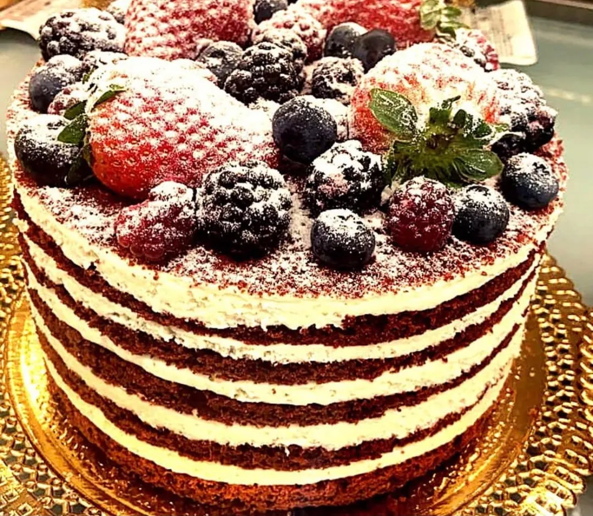
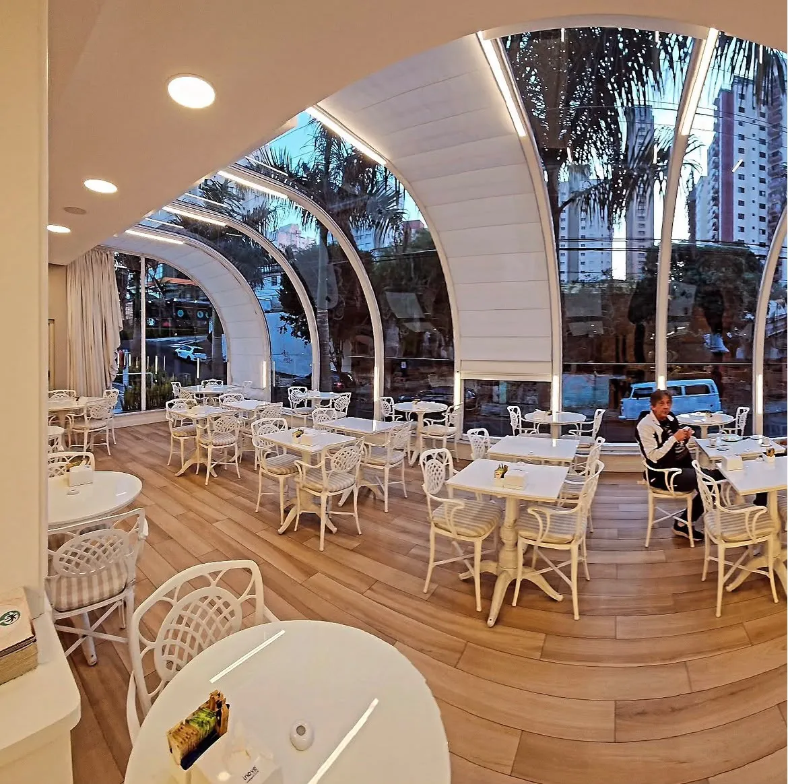
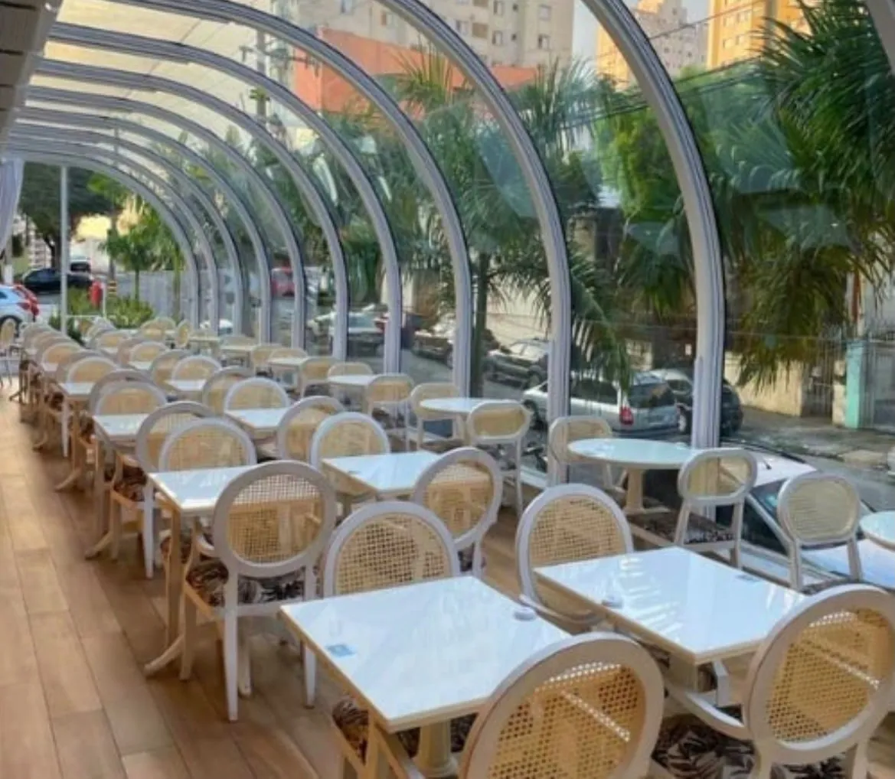
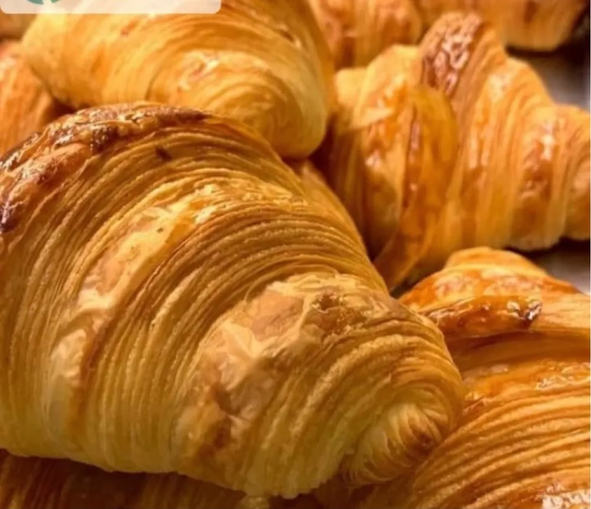
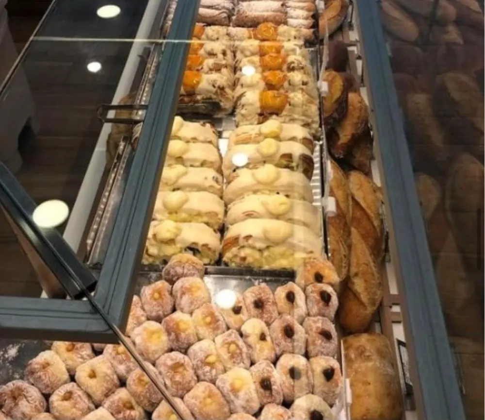
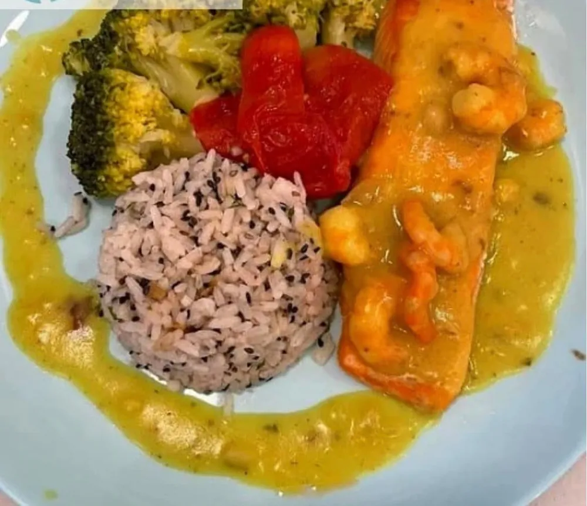
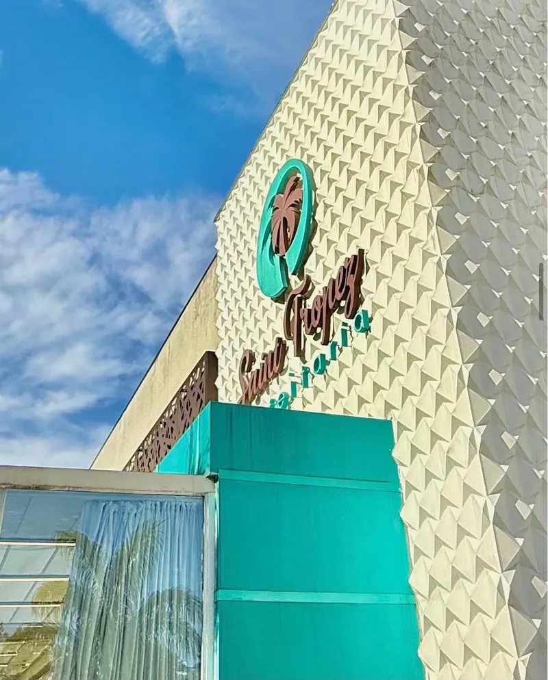
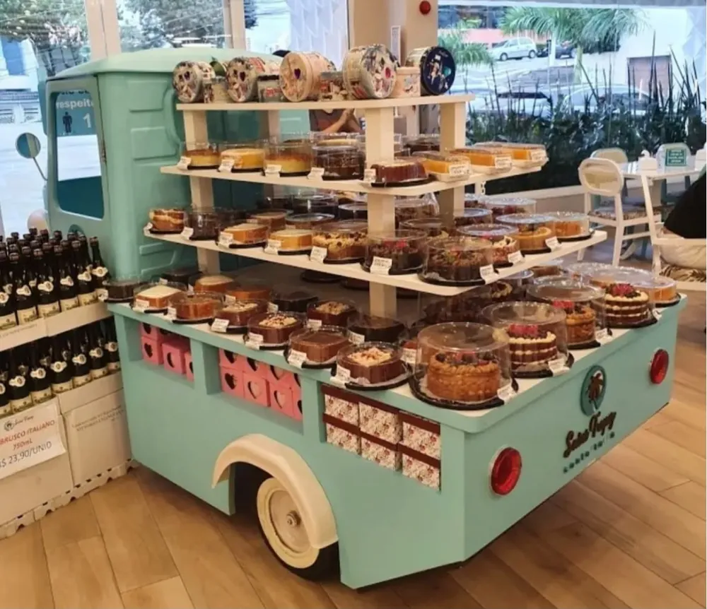
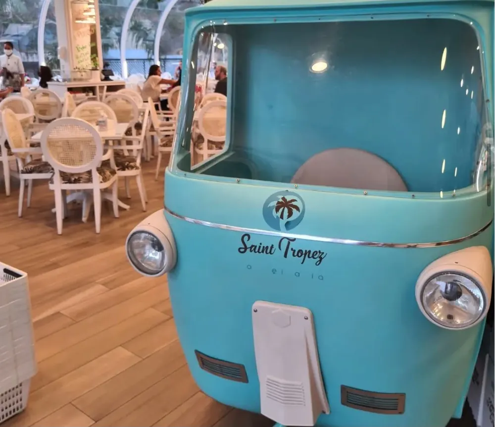
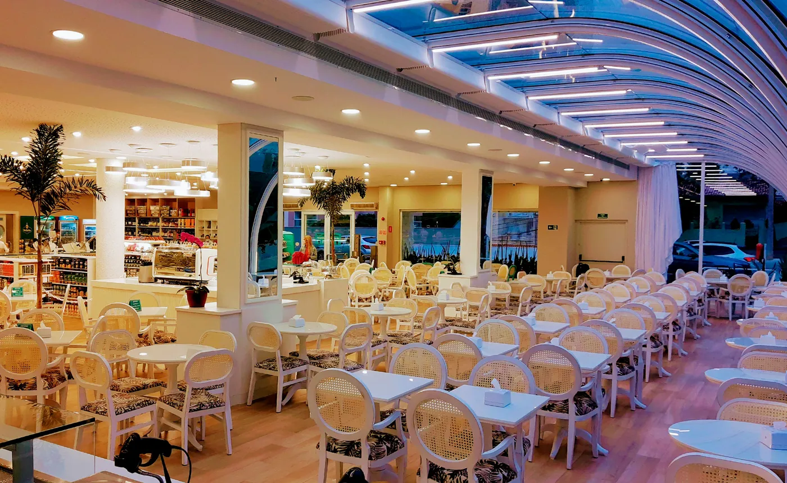

Bolos e tortas
Bolos de camadas, tortas de morango e doces finos para o café da tarde ou para levar inteiro.
Santa Teresinha · Zona Norte de SP
Croissants folhados, bolos de vitrine, cafés selecionados, vinhos e frios, servidos num salão claro que lembra o sul da França. Aberta todos os dias, a partir das 6h.


A casa
A Saint Tropez abriu em 2019 com uma ideia simples: trazer para a Zona Norte a leveza das confeitarias da Côte d'Azur. Arcos brancos, luz natural, cadeiras de palhinha e uma vitrine que convida a levar alguma coisa para casa.
Do primeiro café às 6h da manhã à taça de vinho no fim do dia, o atendimento é presencial e os pedidos são preparados na hora.
Da vitrine
Da panificação do dia aos vinhos da adega, tudo num só lugar.

Bolos de camadas, tortas de morango e doces finos para o café da tarde ou para levar inteiro.

Croissants folhados, pão de nozes com doce de leite e quiches de queijo branco.

A vitrine muda ao longo do dia. Os mais procurados costumam acabar cedo.

Pratos completos, como o salmão com legumes, para quem quer almoçar sem pressa.
Um dia na Saint Tropez
Uma casa para cada momento do dia.
Croissant quentinho, pão do dia e um café antes do trabalho.
AgoraPratos completos num salão iluminado por luz natural.
AgoraUma fatia de bolo, uma torta de morango e a vitrine cheia.
AgoraUma taça e uma tábua para fechar o dia, até 22h ou 23h.
AgoraAmbiente




Visite
| Segunda | 6h às 22h |
|---|---|
| Terça | 6h às 22h |
| Quarta | 6h às 22h |
| Quinta | 6h às 23h |
| Sexta | 6h às 23h |
| Sábado | 6h às 23h |
| Domingo | 6h às 23h |
Dúvidas
O que as pessoas mais perguntam sobre a casa.
Não. A casa não trabalha com reservas, e as mesas são ocupadas por ordem de chegada.
Não. O atendimento é presencial, e os pedidos são feitos e preparados na hora, direto na loja.
Se você quer os itens mais procurados da vitrine, chegue cedo. A casa abre às 6h todos os dias.
De segunda a quarta, até 22h. De quinta a domingo, até 23h.
Rua Piracema, 211, Santa Teresinha. Todos os dias, a partir das 6h.